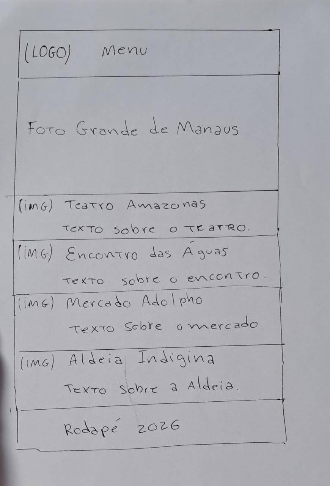

1. Nome do Site
Guia Manaus: Turismo & Sabor
Escolhi esse nome porque ele representa bem o objetivo: ajudar turistas e moradores a conhecerem os pontos turísticos de Manaus e também a gastronomia local. É direto e fácil de lembrar.
2. Finalidade do Site
A finalidade do site é servir como um guia completo para quem visita Manaus. Ele vai apresentar os principais pontos turísticos da cidade, como Teatro Amazonas e Encontro das Águas, junto com recomendações de restaurantes e pratos típicos próximos a cada local. O objetivo é unir turismo e gastronomia em um só lugar.
3. Cenários
- Onde posso comer um bom tacacá perto do Teatro Amazonas?
- Quais os 3 principais pontos turísticos para visitar em Manaus em 1 dia?
4. Esquema de Cores
Algo Outra coisaBranco #FFFFFF - Usado para fundo da página
5. Tipografia
Montserrat - Usada para títulos e subtítulos
Open Sans - Usada para parágrafos e textos do corpo
6. Wireframe
Visão Mobile

Visão Desktop
Versão desktop com header horizontal e 2 colunas de cards de pontos turisticos.